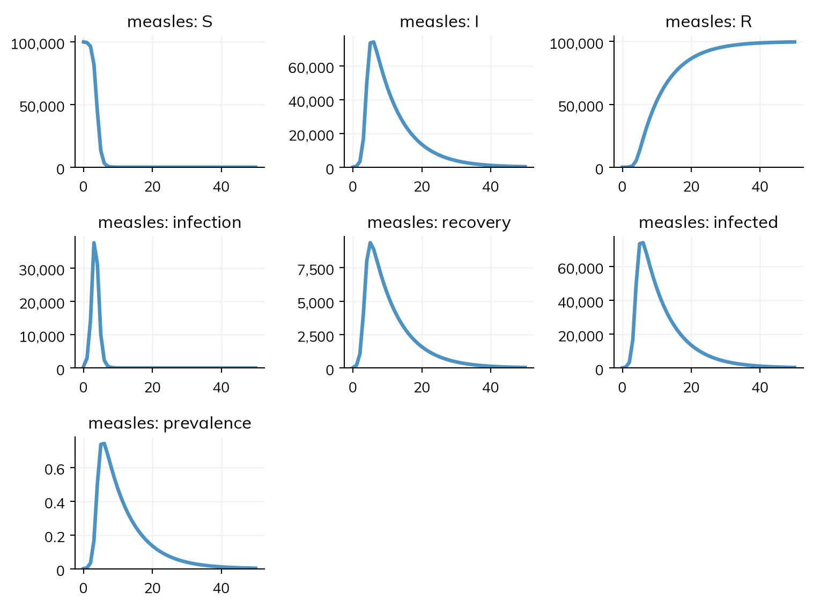
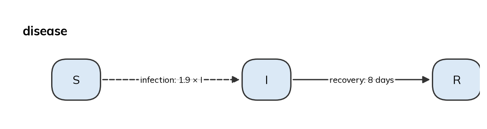

A Starsim model is a sim (ss.Sim) that holds a population and a set of modules: one or more diseases, and whatever else the model needs (contacts, births and deaths, interventions). This page covers how those parts fit together, and how to check that the model Starsim built is the one you meant. For a first walk through a model, see T1 – Getting started and T2 – Building a model.
A model and its parts
Here is a simplified measles outbreak in a town of 100,000 people: an SIR model, in which people are susceptible (S), infectious (I), or recovered and immune (R). Each susceptible person is infected at a rate of β = 1.9 per day times the fraction of people who are infectious, and people are infectious for 8 days on average:
import starsim as ssS, I, R = ss.states('S I R')infection = S >> I @1.9*I # From S to I, at a rate of 1.9 per day times the fraction infectiousrecovery = I >> R @ ss.days(8) # From I to R, after 8 days on averagemeasles = ss.Disease(infection, recovery, init_prev=0.001)sim = ss.Sim(measles, total_pop=100_000, stop=ss.days(50))sim.run()sim.plot()
Sim: measles, 100,000 people, as an ODE, days 0 to 50
measles: R0 = 15.2, with 100 infectious at the start
Done in 0.0028 s; measles: 99,900 infections; at most 74,112 infectious, on day 6

library(starsim)states("S I R")measles <-Disease(infection =Transition(S, I, rate =1.9* I), # From S to I, at a rate of 1.9 per day times the fraction infectiousrecovery =Transition(I, R, dur =days(8)), # From I to R, after 8 days on averageinit_prev =0.001)sim <-Sim(measles, total_pop =100000, stop =days(50))sim$run()sim$plot()
S, I, R = ss.State(name='S'), ss.State(name='I'), ss.State(name='R')infection = ss.Transition(source=S, dest=I, rate=ss.perday(1.9)*I, name='infection') # From S to I, at a rate of 1.9 per day times the fraction infectiousrecovery = ss.Transition(source=I, dest=R, dur=ss.expon(mean=ss.days(8)), name='recovery') # From I to R, after an exponentially distributed time of 8 days on averagemeasles_explicit = ss.Disease(transitions=[infection, recovery], init_prev=0.001, name='measles')sim_explicit = ss.Sim(diseases= measles_explicit,networks= ss.contacts(1), # Everyone mixes with everyone, with one contact per person per daytotal_pop=100_000,start= ss.days(0),stop= ss.days(50),dt= ss.days(1), # Steps of a dayunit='day', # The unit of bare numberssolver='ode', # Run as an ODE)sim_explicit.run()sim_explicit.plot()
Sim: measles, 100,000 people, as an ODE, days 0 to 50
measles: R0 = 15.2, with 100 infectious at the start
Done in 0.0026 s; measles: 99,900 infections; at most 74,112 infectious, on day 6
The “Explicit” tab is the same model with nothing left for Starsim to fill in (the transitions in full, the exponential infectious period, homogeneous mixing with one contact a day, the unit, the step, and the solver), and gives the same results (below).
A sim can hold these kinds of modules, each given to it by keyword (a disease can also be given first, as here):
Kind
What it is for
Keyword
See
Diseases
The states people can be in, and how they move between them
The sim itself holds what applies to the whole model: the population (total_pop=, or n_agents= for a model run as agents), the period (start=, stop=, and the time step dt=), and the random seed, and how the model is run (solver=). See Running sims for these, and its appendix of every sim setting; see Time for the span and the step.
A disease can be declared, as states and transitions, as above, or written as code, for what states and transitions can’t say; both kinds can be in the same sim. See Diseases, Custom modules, and What can be declared.
Shorthand and its written-out form
This page is the reference for how a declared model is written; Diseases says what each kind of transition means. The operators are a short way to write ss.Transition(), and each form below builds the same objects as its written-out form, with the same results:
ss.Transition(U, A, when=ss.on(ss.person.age >= 15))
A trigger
ss.Disease(infection, recovery)
ss.Disease(transitions=[infection, recovery]), or ss.Disease(infection=..., recovery=...)
The disease, named after its variable
A disease can also be a class, with the same lines in its body, or declare them in __init__() with define_states() and define_transitions() (Diseases). Names and values that aren’t given are filled in by the rules in the appendix, and units by those in Time.
Checking a model
A short model leaves a lot unsaid, and Starsim fills it in. describe() lists the whole model as it was built: every state, transition, parameter, and setting, with each value that Starsim chose itself marked as guessed, and the rule it used.
sim.describe()
Sim 1 module, 100,000 people, days 0 to 50
solver
ode
guessed: every part of the model has a compartmental form
unit
day
from the typed values in the model
Disease 'measles' 3 states, 2 transitions
states
S, I, R
I infectious
init: init_prev = 0.001; the rest in S
infection
S -> I transmission, from I
beta = 1.9 per day
rate = 1.9 × I.n / N
homogeneous mixing
recovery
I -> R spontaneous
time in I ~ exponential(mean = 8 days)
guessed: scalar duration
Mixing and interventions
mixing
homogeneous, 1 contact per day
guessed: no network given
Results and running
results
S, I, R, and one flow per transition; also infected, prevalence
plan
measles: as compiled code, the whole run in one call
schedule
every day: measles
Notes
note
unit='day' (from the typed values in the model)
Per step of measles 1 day
infection
beta = 1.9 per day → 1.9 per step
recovery
rate 0.125 per day → p = 1 - exp(-0.125 × 1) = 0.1175 per step
Here three things were guessed: that the infectious period is exponential (Durations), that everyone mixes with everyone, with one contact a day (Stratification), and that the model runs as an ODE (Solvers and backends). The appendix lists every guess. A guess is not an error, just a choice you didn’t make, and it goes away when the value is given. Here the infectious period and the solver are given, so the only guess left is the mixing:
S, I, R = ss.states('S I R')infection = S >> I @1.9*Irecovery = I >> R @ ss.erlang(k=4, mean=ss.days(8)) # Less spread than an exponentialmeasles = ss.Disease(infection, recovery, init_prev=0.001)sim = ss.Sim(measles, total_pop=100_000, stop=ss.days(50), solver='ode')sim.describe()
Sim 1 module, 100,000 people, days 0 to 50
solver
ode
requested
auto would choose: ode (every part of the model has a compartmental form)
unit
day
from the typed values in the model
Disease 'measles' 3 states, 2 transitions
states
S, I, R
I infectious
init: init_prev = 0.001; the rest in S
infection
S -> I transmission, from I
beta = 1.9 per day
rate = 1.9 × I.n / N
homogeneous mixing
recovery
I -> R spontaneous
time in I ~ erlang(k=4, mean=8 days)
Mixing and interventions
mixing
homogeneous, 1 contact per day
guessed: no network given
Results and running
results
S, I, R, and one flow per transition; also infected, prevalence
plan
measles: as compiled code, the whole run in one call
schedule
every day: measles
Notes
note
unit='day' (from the typed values in the model)
Per step of measles 1 day
infection
beta = 1.9 per day → 1.9 per step
recovery
rate 0.5 per day in each of 4 stages → p = 1 - exp(-0.5 × 1) = 0.3935 per step
Equations, diagram, and transitions
equations() writes out the differential equations of a declared disease, with its parameters by name (here beta and dur_I, the mean time in I). They hold whatever the model is run as: as agents, each person moves between states at the same rates.
S, I, R = ss.states('S I R')infection = S >> I @1.9*Irecovery = I >> R @ ss.days(8)measles = ss.Disease(infection, recovery, init_prev=0.001)measles.equations()
dS/dt = -beta * S * I / N
dI/dt = beta * S * I / N - I / dur_I
dR/dt = I / dur_I
diagram() draws the model’s diagram, with each arrow labeled with its transition’s name and value:
measles.diagram()

A dashed arrow is a transmission, and a solid one any other transition; a transition with p= also gives the fraction that takes it. measles.diagram('text') gives it as a Mermaid flowchart instead, for GitHub, wikis, and anything else that draws Mermaid. For every disease of a sim, and how they act on each other, use sim.diagram() and sim.equations().
transitions is a table of the transitions, with what drives each (a rate or a duration) and its kind: a transition is a transmission if people catch it from people in another state (here, “transmission, from I”), and spontaneous otherwise. Printing it also shows which state leads to which:
measles.transitions
name from to driven by kind
infection S I beta * I transmission, from I
recovery I R dur = days(8) spontaneous
S I R
S . infection .
I . . recovery
R . . .
The reproduction number
R0() works out the basic reproduction number from the next-generation matrix of the model. For a simple SIR model this is β × the infectious period (1.9 × 8 ≈ 15), but R0() works for any declared model, including those with several infectious states, groups with their own contacts, or vectors:
measles.R0()
15.2000000000152
R0() on a disease on its own assumes homogeneous mixing. For a disease in a sim with contacts or groups, use the sim’s copy of it, sim.diseases.measles.R0(), which includes them (see below for why the sim has a copy).
Note
The sim prints R0 when it starts. If some people start immune (e.g. init=dict(I=0.001, R=0.9)), it also gives the reproduction number in the population as it starts (often called the effective reproduction number, R): “R0 = 15.2 (R = 1.51 at the start, with 10% susceptible)”.
After a run, Rt() gives the reproduction number at each time point, from the people in each state and the rates as they were then (so it drops while an ss.modify() lowers β). It works for a run of any solver:
A sim runs a copy of each module it is given, so that the same disease can go into several sims (for example, one for each scenario) without one run changing another. After a sim is initialized (by sim.init(), or by sim.run(), which initializes it if needed), its copy of each module is in sim.diseases, sim.networks, and so on, by name. A disease made with ss.Disease() is named after its variable (here measles), and one made from a class after the class (sir); name= gives it a name of its own (see the appendix).
sim = ss.Sim(measles, total_pop=100_000, stop=ss.days(50), verbose=0)sim.run()print(sim.diseases.measles is measles) # The sim's copy, not the originalprint(sim.diseases.measles.pars) # The disease's parametersprint(sim.results.measles.keys()) # Its results
The parameters of each module are in sim.diseases.measles.pars (and sim.pars.measles); see Parameters.
The results are in sim.results, by module: sim.results.measles.I. Every state and every transition has a result of the same name. See Outcomes for declaring more, and Results for working with them.
In a model run as agents, the people are in sim.people, with each person’s age, sex, and the states of each disease; see People and demographics. Each module adds its states to the people, so sim.people.to_df() gives a table with a row for each agent and a column for each of their attributes and states:
sim = ss.Sim(measles, n_agents=1000, total_pop=100_000, stop=ss.days(50), dt=ss.days(0.25), verbose=0) # A quarter-day step, short enough for measles as agentssim.run()sim.people.to_df().head()
uid
slot
alive
age
female
ti_dead
ti_removed
scale
cause_of_death
measles.rel_sus
measles.rel_trans
measles.S
measles.I
measles.ti_I
measles.shift_I
measles.ti_left_I
measles.ti_exit_I
measles.exit_I
measles.R
0
0
0
True
43.482056
False
NaN
NaN
1.0
-1
1.0
1.0
False
False
16.0
-1
25.0
NaN
0
True
1
1
1
True
12.094236
False
NaN
NaN
1.0
-1
1.0
1.0
False
False
19.0
-1
31.0
NaN
0
True
2
2
2
True
88.953827
False
NaN
NaN
1.0
-1
1.0
1.0
False
False
19.0
-1
43.0
NaN
0
True
3
3
3
True
13.770791
False
NaN
NaN
1.0
-1
1.0
1.0
False
False
21.0
-1
38.0
NaN
0
True
4
4
4
True
37.456841
True
NaN
NaN
1.0
-1
1.0
1.0
False
False
20.0
-1
24.0
NaN
0
True
In a compartmental run, sim.people has a row for each group instead.
Checks and pitfalls
A model that runs is not necessarily the model you meant, and a plausible plot is not enough to show that it is. These checks catch most mistakes in a new model:
Read describe() once for each new model, and give any value it guessed that matters to your question.
Check that everyone has a place to start.init_prev starts people in E, not I, in an SEIR model (Starting values).
Check that the states add up. In a closed model (no births or deaths), the people in all the states of a disease add up to the population at every time point.
Match the quantity to the question. New infections are a flow (res.infection), and the number infectious a stock (res.I): summing I over time counts each person once for every day they are infectious.
Check the units of β. Adding a contact matrix or a network changes β from a rate per person to a rate per contact; see Mixing.
Don’t change the original after the sim is made. Since the sim has a copy, changing measles after ss.Sim(measles, ...) has no effect on that sim. Change the sim’s copy, give the new value to the sim by name (ss.Sim(measles, pars=dict(beta=1.5))), or make a new sim.
Further reading
EpiModel: building and checking compartmental and network models in R
odin: writing compartmental models as equations in R, compiled to C
epydemix: compartmental models with transitions declared by name, in Python
From some names and forms, Starsim works out what the model didn’t say. Each value it chooses itself is marked as guessed in describe(), with the rule it used; giving the value removes the guess.
Settings:
What
What Starsim does
To say otherwise
The population
10,000 people
total_pop=, or n_agents= as agents
The length of the run
50 units of time
stop= or dur=
The unit of time
From the diseases’ typed values, then dates, a typed dt, years, or the other modules’ typed values; else time is in steps (Time)
unit=, or type every value
The solver
An ODE, or agents if anything in the model needs them (Solvers)
solver=, or n_agents=
Mixing
Homogeneous, one contact per unit of time
networks=
A single duration (ss.days(8))
Exponential, with that mean
A distribution, e.g. ss.erlang(k=4, mean=ss.days(8))
A non-Erlang duration run as compartments
As many Erlang stages as match its mean and standard deviation
stages= on the transition
How the epidemic starts
A disease with transmission and no starting values starts with 1% of people infected, in the states a transmission (or else an acquisition) leads to: E in an SEIR
init_prev=, init=, or init_n=
Where people start, and births with no state go
The state named S or susceptible (in any case), else the one state transmission infects people from, else the first state made; and the only state with no starting value, if the first has one
default_state= on the disease, or init=
The fraction of the last branch
1 minus the others, when one p= is None or left out
p= on every branch
A parameter given only bounds
The middle of its bounds
A value
The fractions and kind of a dimension
From the population, the world’s ages, or equal fractions; age for ages, a place for a geography, else plain groups (Stratification)
Fractions, and kind=, on stratify()
Aging
People age only if anyone is born or dies
aging=True or False
A named population’s ages
The year the sim starts
ss.population('Kenya', year=...)
Results by group
Every step, or every few steps if every step would take more than about 100 MB
results= on the sim
Names:
Name or form
What Starsim does
To say otherwise
A variable that holds a state, transition, parameter, result, or disease made with ss.Disease()
Names it after the variable (measles is sim.diseases.measles, or sim.measles). A variable whose name starts with _, or is named like a setting of the sim, doesn’t
A keyword, or name=
A transition with no name
infection for the disease’s only transmission, else <source>_to_<destination> (I_to_R)
Given by name: the module, the sim, and the people a value is for
Parameters. A number written in a declared disease becomes a parameter, named by where it is, so that it can be given by name (pars=dict(...)) and fitted:
Where the number is
Its name
Multiplying a source of infection (1.9*I)
beta, or beta_<transition> if the disease has more than one transmission
A duration, the only way out of its state
dur_<state> (e.g. dur_I)
A duration of a transition out of a state with several ways out
dur_<transition> (e.g. dur_death)
Any other rate (ss.perday(0.001), ss.prob(0.01, 'week'))
rate_<transition>
The fraction of a separate transition, p=
p_<transition>
init_prev=
init_prev
Anything else: a factor such as the 0.5 in 0.5*A, the fractions of one transition’s destinations, starting values, an outcome’s fraction or delay
Not a parameter; wrap it in ss.par() to make it one
S, E, I, A, R = ss.states('S E I A R')example = ss.Disease(infection= S >> E @0.5*(I +0.5*A), # beta (the 0.5 on A is not a parameter)onset= ss.Transition(E, {I: 0.6, A: 0.4}, dur=ss.days(5)), # dur_E (the fractions are not parameters)recovery= ss.Transition(I, R, dur=ss.days(7), p=0.99), # dur_recovery and p_recovery, since I has two ways outdeath= ss.Transition(I, ss.dead, dur=ss.days(9), p=0.01),clear= A >> R @ ss.days(5), # dur_Awaning= R >> S @ ss.prob(0.01, 'week'), # rate_waninginit_prev=0.001,)example.pars
Makes the transition a transmission by contact, and the state infectious. A rate on a count (1.9e-5*I.n) is a transmission too, but not by contact, so a network doesn’t carry it
Write the rate you mean
An acquisition
Every transmission, or else each transition out of the first state; what rel_sus, a product’s efficacy against acquisition, and ss.treat act on
acquisition= on the transition
The infected states
Those people are infected into and those that infect them; none, if nothing is transmitted. They give the results infected and prevalence, and are what a test detects and a treatment cures
infected = E + I + H on the disease, ss.State(infected=True), or ss.states(..., infected='E I H')
A result or state called infected or prevalence
Kept, in place of the one Starsim would add (with a state infected, no prevalence is added)
Every state and transition
A result of its own name: a stock for a state, a flow for a transition (with .cum), and <transition>.<state> for each destination of a split
An expression given to the disease (prevalence = I/N)
A result, named after its variable or keyword; in a class body, one whose name starts with _ is a helper, not a result
ss.unborn, ss.dead, ss.outside, ss.stay
Outside the model: where births come from, where deaths go, and where people arrive from or leave to alive; ss.stay, as one destination of a split, keeps people where they are
ss.birth() and ss.death() with no state
A birth into the first state, and a death from every state of people
ss.birth(S, ...), ss.death(I, ...)
The sim’s own results
alive, died, and emigrated (and, as agents, female)
record_people=False on the sim
A result of code named new_..., n_..., cum_..., or ...prevalence
A flow, a stock, a stock, and a ratio; with none of these and no kind=, a flow if an integer, else a ratio, with a warning
kind=
Each ss.BoolState of a module written as code, and each alias given as a function
A result of the same name, the number for whom it is true
The states susceptible and infected (with infectious an alias of infected), and the results prevalence and infection; a test detects infected, and a treatment calls clear_infection()
A state infectious of its own, as ssl.AgentSEIR has